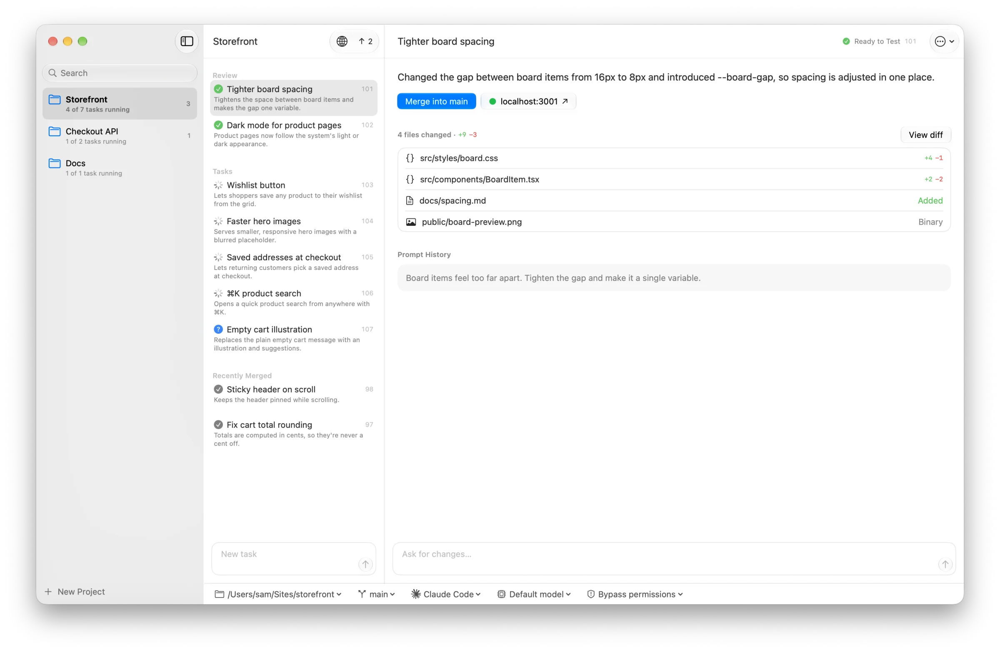
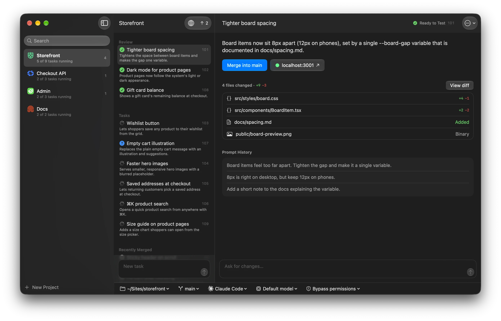
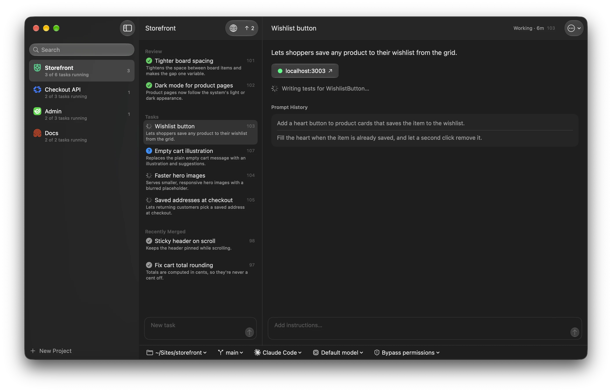
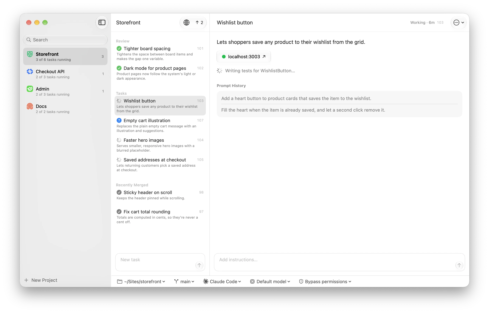
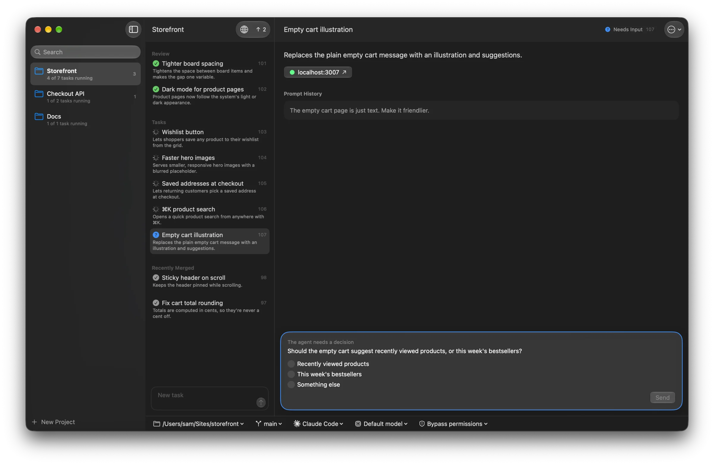
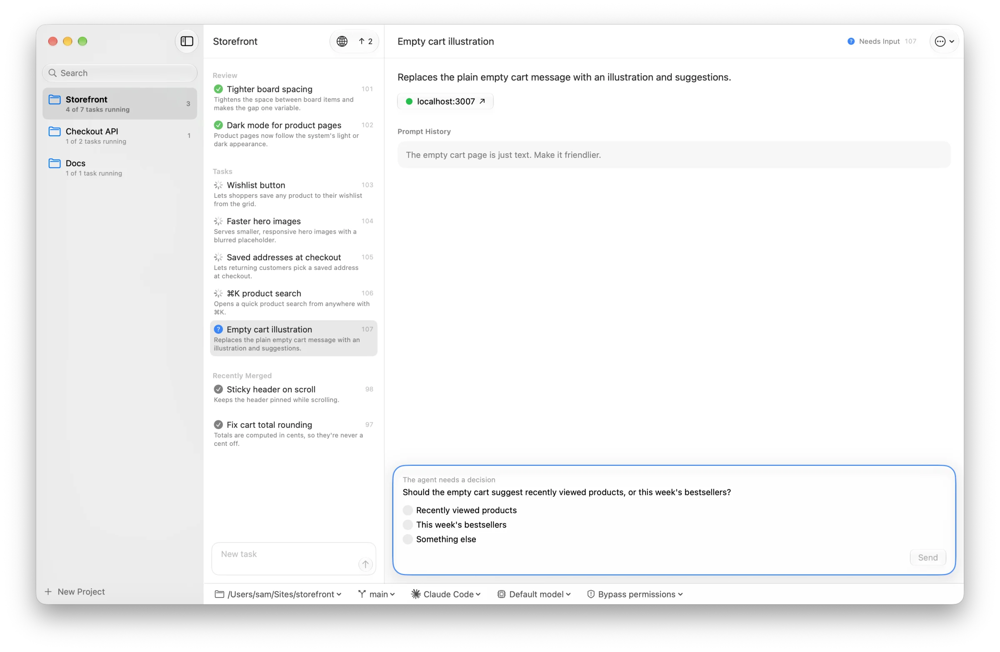

Add tasks. Get them done. Agents, worktrees, branches, ports, commits, merges and cleanup are handled for you, and you can check in from your phone.

A day with Shift.
Many tasks, one calm list.
Calm by design.
Test in the browser, merge or prompt again.
No streaming wall of text, it just does what you ask and you review at the end.
If anything needs your attention, it still asks you.





Everything around the agent,
handled.
One task, one worktree
Each task gets its own branch, worktree, agent session and dev server. Run as many side by side as you like.
Test it for real
Every task has its own localhost port, or share it on your tailnet. Mac, iOS Simulator and Electron apps build and run per task.
See what changed
A short handoff note, a built-in diff, and before and after screenshots the agent takes of the change.
Merge or open a pull request
One click merges into your base branch and cleans up. Or open a pull request and follow it until it lands.
Chat with your project
Ask questions and plan in one ongoing conversation that can start, follow and merge tasks for you.
Schedules
Run a prompt hourly, daily or weekly. Say “every weekday at 9” and the chat drafts it. Each run is a normal task.
Only interrupts when it matters
Questions and approvals come first, a notification when something is ready. Hit a usage limit and it resumes on its own.
The agents you already use
Claude Code or Codex, with your instruction files, models and permissions. Open any task in your editor or terminal.
Made for the keyboard
Slash commands for /task, /schedule and /tag, shortcuts for everything, and a setup assistant that installs what’s missing.
Step away.
Your tasks come with you.
Pair your iPhone with a QR code. The work stays on your Mac; your phone follows it over Tailscale, wherever you are.
- Answer questions, allow or deny requests
- Start, stop and resume tasks
- Preview a task’s dev server on your phone
- Read the diff, screenshots and conversation
- Chat with your project and manage schedules